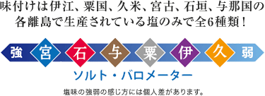

This salt oyster was developed because Doug was concerned that the oysters in the world were using too many chemical seasonings, so he said, "Then we should make it ourselves." Therefore, the ultimate ideal is "salt oysters like my grandmother fried in the past", and we are sticking to the quality from the selection stage of glutinous rice, and including the process of drying rice cakes with rice cakes, it is a 100% handmade product that we do in our own central kitchen in Miyakojima. In addition, we tried to put the spotlight on salt made from seawater, which is a specialty of Okinawa, and tried to make a prank that you can enjoy the difference in salt produced on each remote island. Doug's Burger proudly offers a safe, secure, 100% chemical seasoning-free salt oyster.
The seasoning is only salt produced on the remote islands of Ie, Awakuni, Kume, Miyako, Ishigaki, and Yonaguni. In order to enjoy "handedness salt" in the true sense, we use only the exact same amount of salt in grams for each remote island, and we do not dare to make any adjustments to adjust the taste. Therefore, I think that the difference in salt on each remote island will become clearer.
